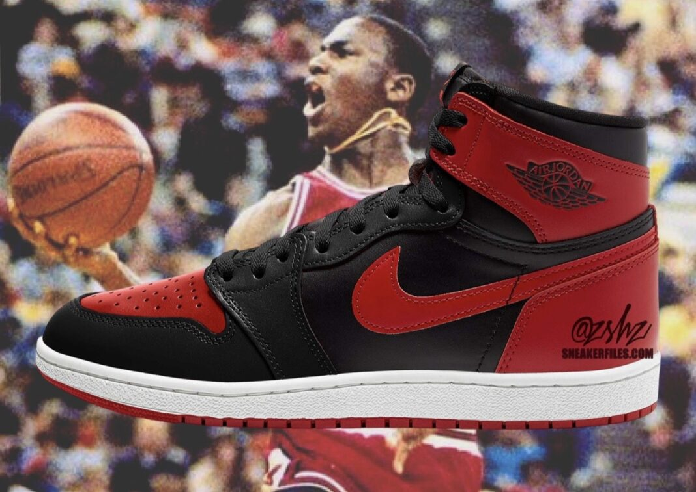

En 1984 Sonny Vaccaro convenció a Nike para firmar un contrato de 15 millones de dólares por 5 años con Michael Jordan, un joven recién llegado a una NBA con Larry Bird y Magic Johnson como grandes iconos por el que apostaron para crear la ya inónica marca "Air Jordan".
"Firmar con Jordan fue la mejor decisión que he tomado en mi vida", reconoció Phil Knight, confundador y ejecutivo de Nike

El primer par de zapatillas Air Jordan fue creado por Nike en colaboración con Michael Jordan, quien en ese momento era una estrella emergente de la NBA, fueron diseñadas por Peter Moore, Tinker Hatfield y Bruce Kilgore.
El lanzamiento de las Air Jordan I a finales de 1984 generó una gran sensación en la industria del calzado deportivo y cambió para la forma en que las zapatillas eran percibidas por el público. Su diseño innovador, la tecnología de amortiguación y la asociación con un jugador de baloncesto de la talla de Michael Jordan catapultaron la línea al éxito.